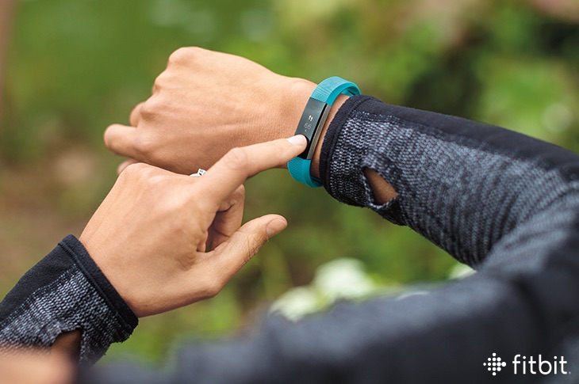
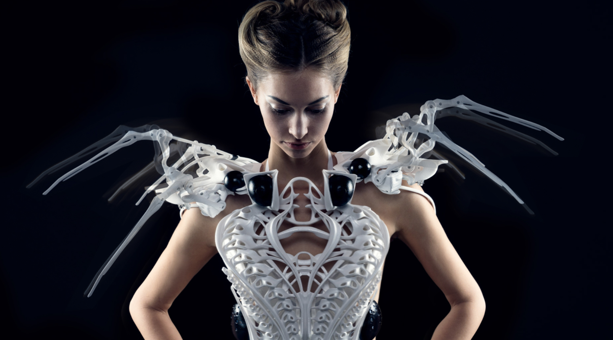

Een wearable is over het algemeen iets wat je draagt waarin een computer-onderdeel een rol speelt. Van smartwatches tot een fitbit met een sensor die je hartslag kan meten.
Het is bij deze opdracht de bedoeling om een nieuw interactief wearable concept te bedenken gebaseerd op de biometrische body data van mensen in dezelfde ruimte. Mijn concept heeft als doelgroep vooral bejaarden in verzorgingstehuizen maar zou eventueel ook in een ziekenhuisruimte kunnen worden gebruikt. Het gaat hier vooral om het probleem uitdroging bij bejaarden, dit is een serieus probleem en zorgt nogal eens voor sterfgevallen binnen verzorgingstehuizen. Bejaarden drinken minder goed, hebben minder dorst en de verpleging kan dit ook verder niet aan een persoon zien. Hier komt de wearable dus kijken, het perfecte middel om op de hoogte te blijven van de biometrische data!
De bejaarden hebben een armband om hun pols, vergelijkbaar met een Fitbit. De voornaamste rol hierbij is dus het vochtgehalte van de gebruiker maar deze kan ook de lichaamstempratuur en de hartslag van de persoon op meten. Hier zouden zelfs andere toevoegingen op gemaakt kunnen worden zoals een knop waarmee de zuster wordt geroepen maar we richten ons nu op de biometrische data. Deze data wordt gelinkt aan de verpleging zodat zij een goed overzicht hebben van alle personen op hun afdeling. Zij kunnen zo middels een scherm observeren hoe het gaat met de ouderen en of zij hulp nodig hebben. Middels verschillende sensoren wordt het vochtgehalte, lichaamstempratuur en de hartslag gemeten. Deze worden geregistreerd in de polsband en met behulp van actuatoren naar de schermen verstuurd. Vervolgens wordt door de verpleging besloten of de waarden goed zijn of dat er actie moet worden ondernomen.

 De tofste wearable tot nu toe vind ik deze 'Spider Dress' van Anouk Wipprecht. Zij heeft een jurk gecombineerd met draagbare elektronica en interactieve couture. De jurk gebruikt Intel Edison technologie en is bijna te zien als een verdedigingssysteem. De mechanische poten aan de bovenkant van de jurk reageren op externe stimuli om de persoonlijke ruimte van degene die de jurk draagt te beschermen. Er worden naderings-sensoren en een ademhalingssensor gebruikt. Als je te snel naar de gebruiker van de jurk toe komt zullen de 'poten' een agressieve positite innemen. Ik vind dit een hele gave manier om gebruik te maken van Wearables vooral omdat het zo anders is dan bijvoorbeeld Fitbits en Smartwatches. Het is een soort van uitbreiding op het mensenlijk lichaam maar op een compleet andere manier. Een hele andere manier van naar Wearables kijken.
Ik vond Wearables ook echt een heel gaaf onderwerp om meer over te weten te komen. Je hebt er namelijk wel een beetje kennis van zoals de Fitbit maar je komt er eigenlijk achter dat er zo veel meer kan dan dat. Dat er ook al veel meer bestaat. Ik denk dat Wearables een hele grote rol gaan spelen in de toekomst. Ik denk niet perse dat ze problemen zullen gaan oplossen maar meer het leven 'makkelijker' zullen maken zoals een Smartphone en een afstandbediening dat is gaan doen. Maar ik zou ook niet heel raar staan te kijken als het voor nog veel meer andere dingen gebruikt zal gaan worden. Het belangrijkste wat ik over Wearables geleerd heb is dat je niet te makkelijk moet denken maar dat ze voor heel veel dingen gebruikt kunnen worden. Zelfs als zou je de link daar in eerste instantie niet bij verwachten, zoals kleding en Wearables. Terwijl dit juist voor gave dingen kan zorgen. Wel heb ik tijdens de opdrachten met Arduino echt bizar veel moeite gehad. Ik kwam er achter dat ik het codeer gedeelte voor geen meter begreep en heb hier dan ook erg veel hulp bij nodig gehad. Dit vond ik wel erg jammer maar je kan natuurlijk niet overal goed in zijn!